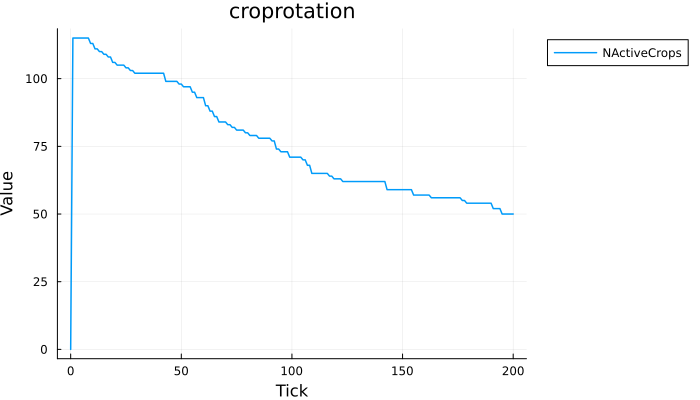
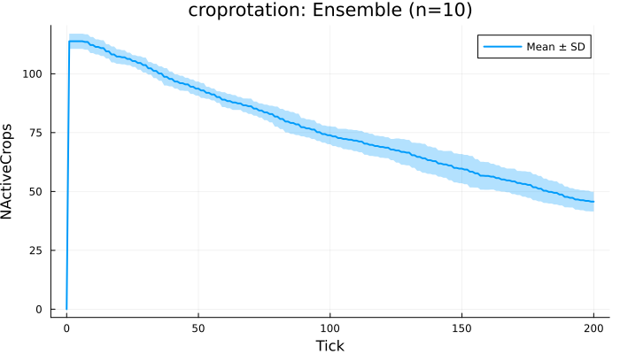
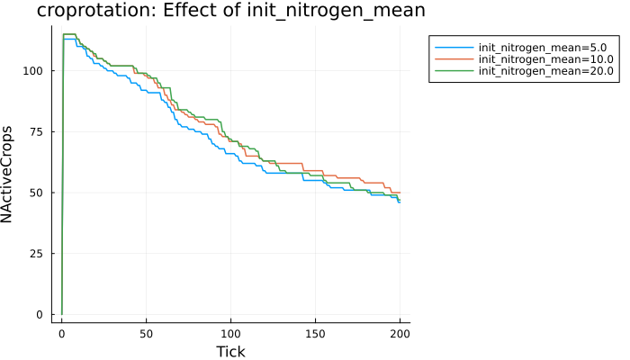

Crop Rotation
Overview
This vignette demonstrates the Crop Rotation model implemented in ArkModelZoo.jl using the Ark.jl ECS framework.
Parameters
| Parameter | Type | Default | Description |
|---|---|---|---|
grid_size |
Int |
11 |
grid size |
init_nitrogen_mean |
Float64 |
10.0 |
init nitrogen mean |
init_nitrogen_sd |
Float64 |
2.0 |
init nitrogen sd |
fallow_chance |
Float64 |
0.05 |
fallow chance |
low_yield_threshold |
Float64 |
0.1 |
low yield threshold |
max_ticks |
Int |
200 |
max ticks |
Source Code
The Julia code to run this model:
using ArkModelZoo
_, trajectory = run_croprotation()Time Series

Ensemble Runs
Ten replicates with different random seeds, showing mean ± standard deviation.

Parameter Sensitivity
Varying init_nitrogen_mean.

Appendix: Source Code
This model is implemented in the Ark.jl Entity-Component-System (ECS) framework. The code is split into five files, each with a distinct role:
- Parameters: a mutable struct holding all configurable values.
- Components: lightweight data types attached to individual entities (agents).
- Resources: world-level shared state accessible to all systems.
- Systems: functions that operate on entities each tick, defining model behavior.
- Model: wiring that assembles the world, registers resources and systems, and provides the run entry point.
Parameters (parameters.jl)
The parameter struct uses @kwdef so that every field has a default value and can be overridden by keyword. These defaults match the original NetLogo model’s slider settings.
Base.@kwdef mutable struct CRParams
grid_size::Int = 11
init_nitrogen_mean::Float64 = 10.0
init_nitrogen_sd::Float64 = 2.0
fallow_chance::Float64 = 0.05
low_yield_threshold::Float64 = 0.1
max_ticks::Int = 200
seed::Int = 42
endComponents (components.jl)
Components are lightweight data types attached to individual entities (agents). Mutable structs hold per-entity state, while empty tag structs act as markers for the ECS query system to efficiently filter entities.
struct CRDummy endResources (resources.jl)
Resources are world-level singletons shared across all systems, used for global state and aggregate statistics.
# Crop IDs: 0=fallow, 1=beet, 2=buckwheat, 3=carrot, 4=cucurbit, 5=grass,
# 6=legume, 7=lettuce, 8=lily, 9=mustard, 10=nightshade, 11=rose,
# 12=cover_crop
const CR_FALLOW = 0
const CR_COVER = 12
const CR_NUM_CROPS = 13 # 0..12
# Crop properties stored in a struct for efficient lookup
struct CRCropInfo
name::String
nitrogen_req::Float64
weed_suscept::Float64
disease_suscept::Float64
harvest_weeks::Int # weeks until harvest
nitrogen_fix::Float64 # nitrogen added after harvest (legumes add nitrogen)
end
function _cr_build_crop_table()
# Properties: name, nitrogen_req, weed_suscept, disease_suscept, harvest_weeks, nitrogen_fix
crops = CRCropInfo[
CRCropInfo("fallow", 0.0, 0.0, 0.0, 8, 1.0), # 0: fallow restores some nitrogen
CRCropInfo("beet", 3.0, 0.6, 0.4, 16, 0.0), # 1
CRCropInfo("buckwheat", 2.0, 0.3, 0.2, 10, 0.0), # 2
CRCropInfo("carrot", 3.0, 0.5, 0.5, 14, 0.0), # 3
CRCropInfo("cucurbit", 4.0, 0.4, 0.6, 18, 0.0), # 4
CRCropInfo("grass", 1.0, 0.2, 0.1, 6, 0.5), # 5
CRCropInfo("legume", 1.0, 0.3, 0.3, 12, 3.0), # 6: fixes nitrogen
CRCropInfo("lettuce", 2.0, 0.7, 0.3, 8, 0.0), # 7
CRCropInfo("lily", 3.0, 0.4, 0.5, 14, 0.0), # 8
CRCropInfo("mustard", 2.0, 0.3, 0.4, 10, 1.0), # 9: cover-like
CRCropInfo("nightshade", 4.0, 0.5, 0.7, 16, 0.0), # 10
CRCropInfo("rose", 3.0, 0.4, 0.4, 14, 0.0), # 11
CRCropInfo("cover_crop", 0.5, 0.1, 0.1, 8, 2.0), # 12: cover crop
]
return crops
end
mutable struct CRState
width::Int
height::Int
n_patches::Int
crop_table::Vector{CRCropInfo}
nitrogen::Vector{Float64}
current_crop::Vector{Int} # crop ID (0-12)
previous_crop::Vector{Int}
harvest_week::Vector{Int} # tick when harvest/plant occurs
last_yield::Vector{Float64}
crop_history::Vector{Vector{Int}} # history of planted crops
available_crops::Vector{Set{Int}} # crops still available (not removed by disease/weeds)
end
function CRState(w::Int, h::Int)
n = w * h
crop_table = _cr_build_crop_table()
CRState(
w, h, n,
crop_table,
zeros(Float64, n),
fill(CR_FALLOW, n),
fill(CR_FALLOW, n),
zeros(Int, n),
ones(Float64, n),
[Int[] for _ in 1:n],
[Set(1:12) for _ in 1:n], # all non-fallow crops available initially
)
end
mutable struct CRStats
n_active_crops::Int # patches with non-fallow crops
end
CRStats() = CRStats(0)Systems (systems.jl)
Systems contain the model logic and execute in a defined order each tick. Each system struct implements either initialize! (run once at setup) or update! (run every tick).
# --- Initialization ---
struct InitCRSystem <: System end
function initialize!(::InitCRSystem, world::World)
params = get_resource(world, CRParams)
rng = get_resource(world, RNGResource).rng
state = get_resource(world, CRState)
stats = get_resource(world, CRStats)
for i in 1:state.n_patches
state.nitrogen[i] = max(0.0, randn(rng) * params.init_nitrogen_sd + params.init_nitrogen_mean)
state.current_crop[i] = CR_FALLOW
state.previous_crop[i] = CR_FALLOW
state.harvest_week[i] = 0 # will plant at tick 0
state.last_yield[i] = 1.0
empty!(state.crop_history[i])
state.available_crops[i] = Set(1:12)
end
stats.n_active_crops = 0
return nothing
end
# --- Weekly step: check if harvest/plant time ---
struct CRWeeklySystem <: System end
function update!(::CRWeeklySystem, world::World)
params = get_resource(world, CRParams)
rng = get_resource(world, RNGResource).rng
state = get_resource(world, CRState)
tick = get_resource(world, Tick).tick
for i in 1:state.n_patches
if tick == state.harvest_week[i]
if state.current_crop[i] != CR_FALLOW || tick == 0
if tick > 0
_cr_harvest!(state, params, rng, i)
end
_cr_plant!(state, params, rng, i, tick)
end
end
end
return nothing
end
function _cr_harvest!(state::CRState, params::CRParams, rng, idx::Int)
crop_id = state.current_crop[idx]
if crop_id == CR_FALLOW
return
end
crop_info = state.crop_table[crop_id + 1] # +1 for 1-based indexing
# Weed loss
weed_loss = tanh(rand(rng) * crop_info.weed_suscept)
# Disease loss
disease_loss = tanh(rand(rng) * crop_info.disease_suscept)
yield_val = (1.0 - weed_loss) * (1.0 - disease_loss)
state.last_yield[idx] = yield_val
# Nitrogen depletion from crop
state.nitrogen[idx] -= crop_info.nitrogen_req * yield_val
# Nitrogen fixation (legumes, cover crops)
state.nitrogen[idx] += crop_info.nitrogen_fix
state.nitrogen[idx] = max(0.0, state.nitrogen[idx])
# Remove crop from available if heavily damaged by disease or weeds
if disease_loss > 0.5 || weed_loss > 0.5
delete!(state.available_crops[idx], crop_id)
end
state.previous_crop[idx] = crop_id
push!(state.crop_history[idx], crop_id)
end
function _cr_plant!(state::CRState, params::CRParams, rng, idx::Int, tick::Int)
crop_id = _cr_select_crop(state, params, rng, idx)
state.current_crop[idx] = crop_id
crop_info = state.crop_table[crop_id + 1]
state.harvest_week[idx] = tick + crop_info.harvest_weeks
end
function _cr_select_crop(state::CRState, params::CRParams, rng, idx::Int)
available = state.available_crops[idx]
prev = state.previous_crop[idx]
nitrogen = state.nitrogen[idx]
last_yield = state.last_yield[idx]
# Rule 2: no possible crops → fallow
if isempty(available)
return CR_FALLOW
end
# Rule 3: previous yield very low → fallow
if last_yield < params.low_yield_threshold && prev != CR_FALLOW
return CR_FALLOW
end
# Rule 4: random fallow chance (5%)
if rand(rng) < params.fallow_chance
return CR_FALLOW
end
# Rule 5a/b: low nitrogen → cover crop or legume
if nitrogen < 3.0
if CR_COVER in available
return CR_COVER
end
if 6 in available # legume
return 6
end
return CR_FALLOW
end
# Rule 6: filter by nitrogen requirement
feasible = Set{Int}()
for c in available
if state.crop_table[c + 1].nitrogen_req <= nitrogen
push!(feasible, c)
end
end
if isempty(feasible)
return CR_FALLOW
end
# Rule 7: remove previous crop (no immediate repeat)
if prev in feasible && length(feasible) > 1
delete!(feasible, prev)
end
# Rule 8: filter by oversaturation (same family planted recently)
if length(state.crop_history[idx]) >= 3
recent = state.crop_history[idx][max(1, end-2):end]
oversaturated = Set{Int}()
for c in feasible
if count(==(c), recent) >= 2
push!(oversaturated, c)
end
end
if length(feasible) > length(oversaturated)
setdiff!(feasible, oversaturated)
end
end
if isempty(feasible)
return CR_FALLOW
end
# Rule 9-12: preference for nitrogen fixers when nitrogen is moderate
if nitrogen < 6.0
n_fixers = filter(c -> state.crop_table[c + 1].nitrogen_fix > 0.0, collect(feasible))
if !isempty(n_fixers)
return n_fixers[rand(rng, 1:length(n_fixers))]
end
end
# Rule 13: random from feasible
feasible_vec = collect(feasible)
return feasible_vec[rand(rng, 1:length(feasible_vec))]
end
# --- Stats ---
struct CRStatsSystem <: System end
function update!(::CRStatsSystem, world::World)
state = get_resource(world, CRState)
stats = get_resource(world, CRStats)
n_active = 0
for i in 1:state.n_patches
if state.current_crop[i] != CR_FALLOW
n_active += 1
end
end
stats.n_active_crops = n_active
return nothing
end
# --- Termination ---
struct CRTerminationSystem <: System end
function update!(::CRTerminationSystem, world::World)
params = get_resource(world, CRParams)
tick = get_resource(world, Tick)
if tick.tick + 1 >= params.max_ticks
get_resource(world, Terminate).stop = true
end
return nothing
endModel (model.jl)
The model file assembles all pieces: it creates the ECS World with the required component types, registers resources, builds the Scheduler with systems in execution order, and exposes the public run entry point. The observer pattern records the trajectory each tick.
function croprotation_world(; initial_capacity::Int = 128)
return World(CRDummy; initial_capacity=initial_capacity, allow_mutable=true)
end
function croprotation_systems()
return (
InitCRSystem(),
CRWeeklySystem(),
CRStatsSystem(),
CRTerminationSystem(),
)
end
function croprotation_model(params::CRParams = CRParams())
world = croprotation_world()
_add_standard_resources!(world, params)
add_resource!(world, CRState(params.grid_size, params.grid_size))
add_resource!(world, CRStats())
scheduler = Scheduler(world, croprotation_systems())
initialize!(scheduler)
return scheduler
end
struct CRObserver end
function croprotation_headers(::CRObserver)
return ["NActiveCrops"]
end
function croprotation_values(::CRObserver, world::World)
stats = get_resource(world, CRStats)
return Float64[Float64(stats.n_active_crops)]
end
function run_croprotation(; params::CRParams = CRParams(), observe::Bool = true)
return _run_model(croprotation_model, CRObserver(), croprotation_values; params, observe)
end